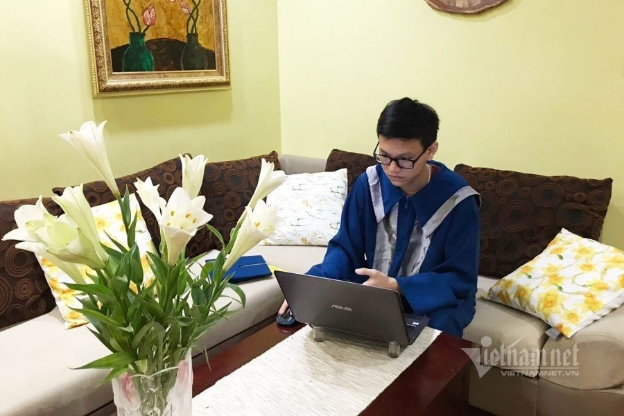
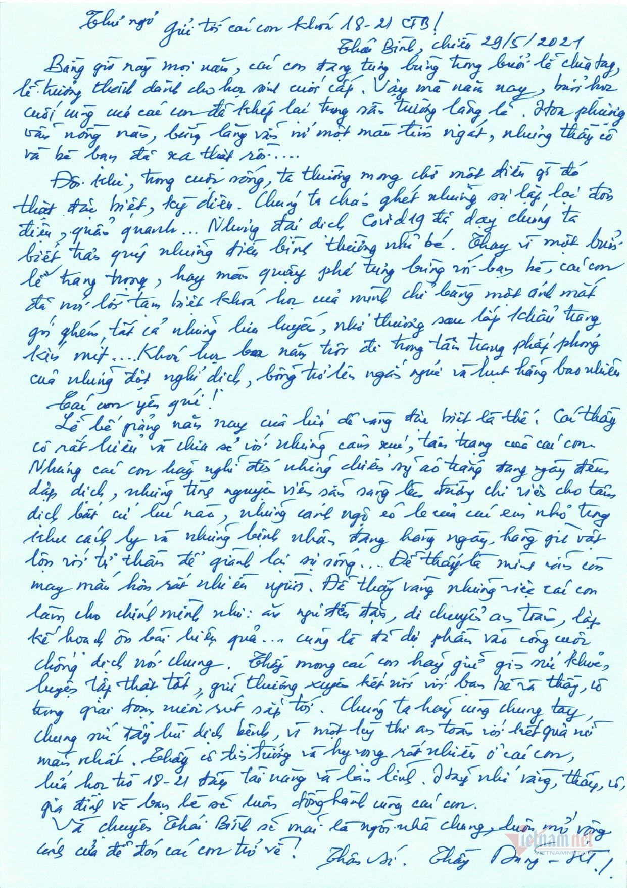
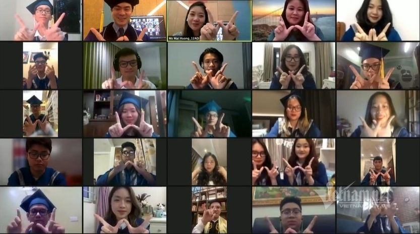
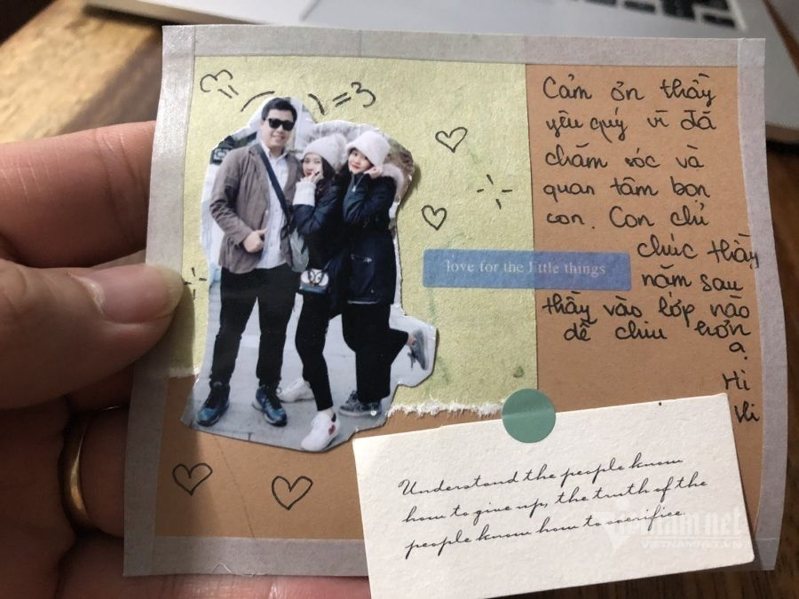
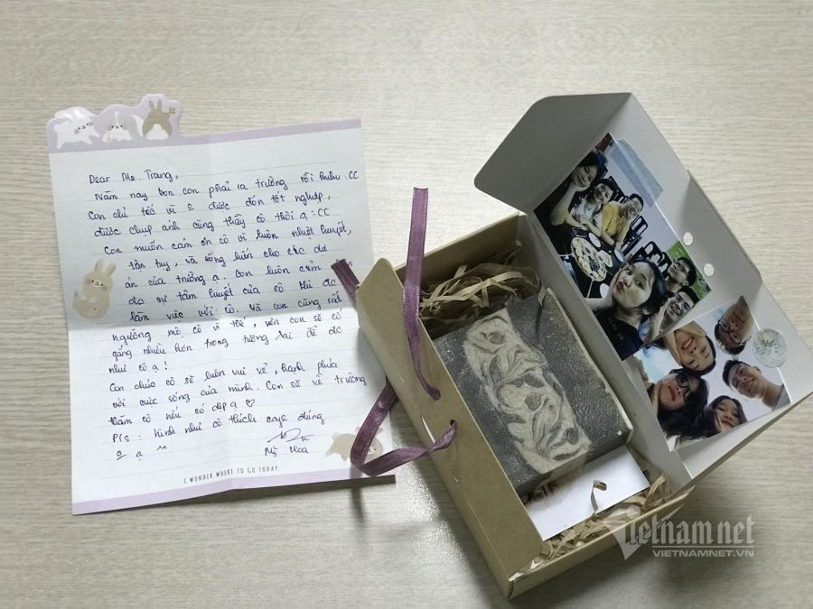

Học trò cuối cấp nghẹn ngào chia xa trong lễ bế giảng 'chưa từng có'
Sau 3 năm gắn bó, năm nay, lứa học trò cuối cấp không thể có một mùa học, mùa thi và mùa chia tay cùng nhau trọn vẹn. Buổi bế giảng trực tuyến lại trở thành khoảnh khắc cuối cùng giúp học trò cùng nhau “đóng băng” những kỷ niệm.
“Nếu nói tuổi thanh xuân giống như một cơn mưa rào, dù cho bạn từng bị cảm lạnh vì tắm mưa, thì bạn vẫn muốn đắm chìm trong cơn mưa ấy lần nữa. Với tớ, 3 năm cấp 3 chính là khoảng thời gian đẹp đẽ nhất, đáng hoài niệm nhất của tuổi thanh xuân”, Hoài Hương, cô học trò lớp 12 của Trường THPT Chuyên Thái Bình viết từng dòng lưu bút trực tuyến để gửi lời chia tay tới những người bạn cùng lớp.
Năm nay, vì dịch bệnh, những học trò khối 12 như Hương không thể có kết thúc trọn vẹn bằng một buổi lễ bế giảng như dự tính.
“Buồn, hụt hẫng và tiếc nuối là cảm xúc trong những ngày cuối cùng thời học sinh của em. Em vốn nghĩ vẫn còn thời gian để cả lớp cùng nhau khoác vai, khóc cười khi nhắc nhớ lại những kỷ niệm của ngày đầu gặp gỡ.
Những phút giây cuối cùng, nếu để nói trọn vẹn hay chưa thì chắc chắn là chưa, nhưng để là cái kết cho cuốn nhật ký mang tên cấp 3 thì có lẽ cũng đã đủ hạnh phúc”.

Học trò mặc áo cử nhân, ngồi trước màn hình laptop, điện thoại để dõi theo buổi lễ tốt nghiệp.
“Cả lớp đã tự tổ chức buổi chia sẻ online để nói hết những điều mà mình muốn nói. Nhìn những gương mặt quen thuộc đã gắn bó với mình trong suốt chặng đường dài, nhiều bạn nấc lên rồi oà khóc, kể cả đám con trai. Giây phút đó, thực sự không ai muốn rời xa”.
Thấu hiểu sự tiếc nuối của học trò, thầy Nguyễn Văn Dũng, Hiệu trưởng Trường THPT Chuyên Thái Bình cũng đã viết một lá thư tay để động viên các học sinh cuối cấp.
“Lễ bế giảng năm nay của lứa dê vàng thật đặc biệt. Thay vì một buổi lễ trang trọng hay màn quậy phá tưng bừng với bạn bè, các con đã nói lời tạm biệt chỉ bằng một ánh mắt, gói ghém tất cả những lưu luyến, nhớ thương sau lớp khẩu trang kín mít.
Khoá học 3 năm trôi đi trong tâm trạng phấp phỏng của những đợt nghỉ dịch,... bỗng trở nên ngắn ngủi và hụt hẫng biết bao nhiêu. Các thầy cô rất hiểu và chia sẻ với những cảm xúc, tâm trạng của các con”.

Lá thư tay động viên học trò cuối cấp của thầy Nguyễn Văn Dũng, Hiệu trưởng Trường THPT Chuyên Thái Bình.
Bức thư ngày chia tay của thầy hiệu trưởng khiến Hương và các bạn học sinh lớp 12 “vỡ oà”.
“Từ tận sâu đáy lòng, chúng em rất biết ơn sự thấu hiểu, quan tâm, yêu thương mà các thầy cô đã dành cho tụi em trong suốt 3 năm, cho đến tận giây phút cuối cùng này”. Hương nói.
“Buổi lễ tốt nghiệp online dẫu xa mặt nhưng không cách lòng”
Mặc dù đã được thông báo từ trước buổi lễ tốt nghiệp sẽ được thực hiện dưới hình thức trực tuyến, nhưng cả cô và trò khối 12 của Trường Phổ thông Song ngữ Liên cấp Wellspring vẫn mong ngóng một điều kỳ diệu sẽ xảy ra.
“Dẫu vậy, vì dịch bệnh, lễ tốt nghiệp vẫn không thể diễn ra theo hình thức trực tiếp. Đó chính là điều tiếc nuối nhất của cả cô và trò”, cô Ngô Mai Hương, giáo viên khối 12 nói.
Ở các “điểm cầu” khác nhau, học sinh trong toàn trường mặc áo cử nhân, ngồi trước màn hình laptop, điện thoại để dõi theo buổi lễ.
Lễ tốt nghiệp năm nay có phần đặc biệt hơn khi các thầy cô sẽ cùng dành thời gian nhìn lại thành tích, dấu ấn của từng bạn học sinh cuối cấp.
“Điều này sẽ thể hiện tình cảm trân trọng, quan tâm của thầy cô đối với học sinh, coi các con giống như một thành viên trong gia đình”.
Là giáo viên chủ nhiệm, từng có nhiều kỷ niệm, cảm xúc khác nhau với học trò, cô Hương nói vui, đôi lúc “giáo viên giống như cảnh sát”, vì chỉ cần học sinh nhìn thấy cô là sợ.
Trong suốt 3 năm ấy, có những niềm vui và cả những hờn giận.
“Nhưng dù là vui hay buồn, lỗi lầm hay ký ức vui vẻ, tất cả cũng đều đã là quá khứ. Quan trọng là chúng ta của hiện tại đã có những khoảng thời gian đẹp đẽ nhất bên nhau, trong trẻo và sẽ là miền ký ức bình yên để các con có thể tìm về.
Điều tiếc nuối nhất có lẽ là những trải nghiệm cuối cùng trong thời học sinh của các con đã không được trọn vẹn”, cô Hương tiếc nuối.

Học trò tham gia một lớp học cuối cùng để nói chuyện trực tiếp với các thầy cô, trong không gian lớp học trực tuyến vốn các con đã quen trong suốt những năm qua.
Dù vậy, công nghệ cũng đã phần nào hỗ trợ kéo gần hơn những khoảng cách ấy.
Thông qua hình thức viết lưu bút online, học trò có thể nhắn gửi lời yêu thương tới thầy cô, bạn bè.
Dù không thể gặp nhau trực tiếp nhưng những cuốn lưu bút online lại trở thành nơi để học trò có thể giãi bày cảm xúc và cũng là lần cuối cùng học trò cuối cấp được nói những suy nghĩ của mình.
Một điều đặc biệt, trong buổi lễ tốt nghiệp trực tuyến này, lứa học sinh lớp 12 sẽ được tham gia một “lớp học cuối cùng”.
“Dù là online nhưng đây sẽ là lần cuối các con được nói chuyện trực tiếp với các thầy cô, trong không gian lớp học trực tuyến vốn các con đã quen trong suốt những năm qua, để chia sẻ dòng cảm xúc của mình thay vì những dòng chữ đánh máy. Giây phút ấy quả thực rất xúc động và nghẹn ngào. Buổi lễ tốt nghiệp online dẫu xa mặt nhưng không hề cách lòng”.


Học trò biết không được dự lễ tốt nghiệp và gặp thầy cô trực tiếp nên đã gửi thư và những món quà tri ân nhỏ với những lời chúc rất đáng yêu.
Tham gia buổi lễ tốt nghiệp online, Mỹ Hoa, học trò lớp 12 xúc động: “Hôm nay, con cảm thấy rất tiếc nuối vì không thể được cùng thầy cô và các bạn đón một lễ tốt nghiệp trực tiếp. Nhưng con vẫn cảm thấy may mắn vì một lễ tốt nghiệp trực tuyến vẫn có thể diễn ra, để thời gian trôi chậm lại hơn một chút, giúp chúng con được nhìn ngắm lại khoảng thời gian 3 năm vừa qua.
Sẽ còn những tiếc nuối, hụt hẫng, nhưng với chúng con, lễ tốt nghiệp năm nay đã phần nào trọn vẹn theo cách riêng của nó.
Chúng con biết ơn vì đến giây phút cuối cùng, vẫn có thầy cô và các bạn ở bên, để cùng nhau lưu lại những mảnh ghép cuối cùng - một phần thanh xuân đẹp đẽ mà chúng con có thể cảm thấy ấm áp, bình yên khi nhớ về", nữ sinh lớp 12 nói.
Báo Vietnamnet.